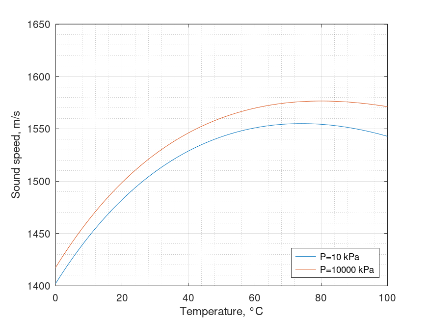

Sound speed in pure water. Belogol'skii, Sekoyan et al equation
Mathematical definition
$$\boxed{\begin{array}{l} C\left( {T,P} \right) = C\left( {T,0} \right) + {M_1}\left( T \right)\left( {P - 0.101325} \right)\\ + {M_2}\left( T \right){\left( {P - 0.101325} \right)^2} + {M_3}\left( T \right){\left( {P - 0.101325} \right)^3} \end{array}}$$
| Notation | Description | Units | Conversion | Limits |
|---|---|---|---|---|
| $C$ | sound speed | $m/s$ | ||
| $T$ | temperature | $^{\circ}C$ | $0 < T < 40$ | |
| $P$ | pressure | $kPa$ | $\times 10^{-3}$ | $100 < P < 60000$ |
$$C\left( {T,0} \right) = {a_{00}} + {a_{10}}T + {a_{20}}{T^2} + {a_{30}}{T^3} + {a_{40}}{T^4} + {a_{50}}{T^5}$$
$${M_1}\left( T \right) = {a_{01}} + {a_{11}}T + {a_{21}}{T^2} + {a_{31}}{T^3}$$
$${M_2}\left( T \right) = {a_{02}} + {a_{12}}T + {a_{22}}{T^2} + {a_{32}}{T^3}$$
$${M_3}\left( T \right) = {a_{03}} + {a_{13}}T + {a_{23}}{T^2} + {a_{33}}{T^3}$$
| Coefficient | Value | Coefficient | Value |
|---|---|---|---|
| $a_{00}$ | $+1402.38744$ | $a_{02}$ | $+4.31532833 \times 10^{-3}$ |
| $a_{10}$ | $+5.03836171$ | $a_{12}$ | $-2.938590293 \times 10^{-4}$ |
| $a_{20}$ | $-5.81172916 \times 10^{-2}$ | $a_{22}$ | $+6.822485943 \times 10^{-6}$ |
| $a_{30}$ | $+3.34638117 \times 10^{-4}$ | $a_{32}$ | $-6.674551162 \times 10^{-8}$ |
| $a_{40}$ | $-1.48259672 \times 10^{-6}$ | $a_{03}$ | $-1.852993525 \times 10^{-5}$ |
| $a_{50}$ | $+3.16585020 \times 10^{-9}$ | $a_{13}$ | $+1.481844713 \times 10^{-6}$ |
| $a_{01}$ | $+1.49043589$ | $a_{23}$ | $-3.940994021 \times 10^{-8}$ |
| $a_{11}$ | $+1.077850609 \times 10^{-2}$ | $a_{33}$ | $+3.939902307 \times 10^{-10}$ |
| $a_{21}$ | $-2.232794656 \times 10^{-4}$ | ||
| $a_{31}$ | $+2.718246452 \times 10^{-6}$ |
Octave/Matlab implementation
function C = sound_speed_water_belogolskii(T, P)
% Arguments
% T: temperature \ degree Celsius \ 0 < T < 40
% P: pressure \ kPa \ 100 < P < 60000
% Results
% C: speed of sound in pure water \ m/s
P = P*1e-3;
a00 = +1402.38744;
a10 = +5.03836171;
a20 = -5.81172916e-2;
a30 = +3.34638117e-4;
a40 = -1.48259672e-6;
a50 = +3.16585020e-9;
a01 = +1.49043589;
a11 = +1.077850609e-2;
a21 = -2.232794656e-4;
a31 = +2.718246452e-6;
a02 = +4.315328330e-3;
a12 = -2.938590293e-4;
a22 = +6.822485943e-6;
a32 = -6.674551162e-8;
a03 = -1.852993525e-5;
a13 = +1.481844713e-6;
a23 = -3.940994021e-8;
a33 = +3.939902307e-10;
C0 = a00 + a10*T + a20*(T.^2) + a30*(T.^3) + a40*(T.^4) + a50*(T.^5);
M1 = a01 + a11*T + a21*(T.^2) + a31*(T.^3);
M2 = a02 + a12*T + a22*(T.^2) + a32*(T.^3);
M3 = a03 + a13*T + a23*(T.^2) + a33*(T.^3);
C = C0 + M1.*(P - 0.101325) + M2.*((P - 0.101325).^2) ...
+ M3.*((P - 0.101325).^3);
end
Computational examples

References
- Belogol'Skii, VA; Sekoyan, SS; Samorukova, LM; Stefanov, SR; Levtsov, VI, "Pressure dependence of the sound velocity in distilled water", 1999